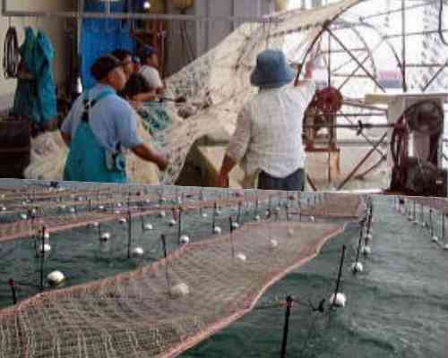
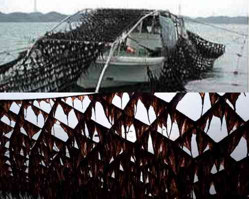

岡山海苔ってどうやって出来るの？

採苗・育苗（10月~11月)
陸上の水槽内で海苔網を巻いた水車を回転させ、網に種(殻胞子)を付着させます。
採苗した網を10~20枚重ね、海面に張り込みます。網を毎日数時間干すことで、健全な海苔芽が育ちます。

本張り(11月)
育苗が終わった網を１枚ずつ貼り直します。岡山県では、海面の枠の中に網を張る「浮流し」養殖が主流です。

収獲(11月〜3月)
伸びてきた海苔葉体を1~2週間おきに刈り取ります。養殖期間中15回程度刈り取りを行います。
*海苔網の下に潜って海苔を刈り取ります。大型船で「もぐり船」と言います。